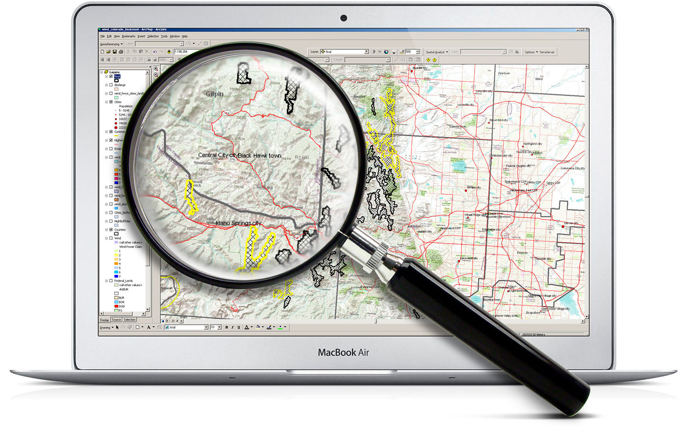

Group 16 PRODUCT
We help the world change. GIS is an excellent tool for integrating separate data sets from different stakeholders in all sorts of formats, informing H&H modeling and conservation strategies.
The first step in moving forward with a Smart City, IoT, or 5G project is understanding your assets. GIS is the perfect tool to map out and understand your valuable real estate.
Whether you're performing a view-shed analysis, creating regulatory documents, or designing a new community plan, GIS is a crucial tool for data compilation, analysis, and visualization.
What do roads, bridges, transit-oriented development all have in common? A networked element that relies on a series of geospatial characteristics for good design.